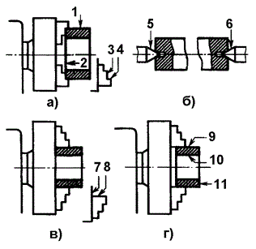
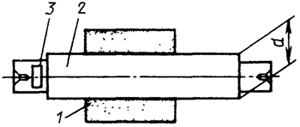
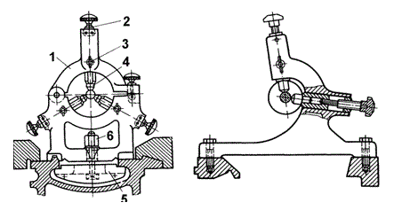

При установке заготовки детали на станке различают следующие группы поверхностей:
Установочные базы — поверхности, а также линии и точки, которые служат для установки заготовки на станке и ориентирующие ее относительно режущего инструмента, например торцовая 3 и радиальная 4 поверхности кулачков (а) или торцовая поверхность патрона и радиальная поверхность кулачков 8 (в), или конические поверхности 5 и 6 центров станка (б) и др.
Установочными базами могут быть различные поверхности заготовок (наружные и внутренние цилиндрические поверхности), а также центровые гнезда, плоскости.
Например, установочными базами для втулки могут быть наружная цилиндрическая 1 поверхность и торец 2 (а), наружная 9 и внутренняя цилиндрическая поверхность 10 и торец 11 втулки (г).
Для базирования заготовок при первоначальной обработке используют необработанные поверхности (черновые базы), при последующей обработке — обработанные поверхности (чистовые базы).
Установочные базы делят на основные и вспомогательные. Основные установочные базы — это поверхности, которые ориентируют заготовки (обрабатываемые детали) на станке и определяют положение готовых деталей в машине относительно других сопрягаемых деталей при ее работе. Например, основными установочными базами для втулки могут являться торец 11 и внутренняя цилиндрическая поверхность 10, если втулка монтируется на вал (г). Вспомогательные установочные базы — это поверхности, которые используют только для установки заготовок деталей на станке; они не имеют особого значения для работы машины. Примерами вспомогательной базы могут служить центровые гнезда вала, обтачиваемого и шлифуемого с установкой в центрах (в) станка, необработанная шестигранная поверхность головки болта и др.
При выборе черновых установочных баз руководствуются следующими основными правилами: базовые поверхности должны быть по возможности ровными и чистыми (не следует, например, принимать за базы поверхности, на которых располагаются литники, выпоры, заусенцы и линии разъема моделей), базовые поверхности не должны изменяться относительно других поверхностей (не следует, например, брать за базу поверхность литого отверстия, так как его положение может изменяться). За базы рекомендуется принимать поверхности с минимальными припусками или вообще не подвергаемые обработке. При переустановке заготовки черновые базы заменяются чистовыми.
Измерительные базы — поверхность, линия или точка, от которых производится отсчет выполняемых размеров при обработке или измерении заготовок.
Способ установки и закрепления заготовок на станке выбирают в зависимости от размеров, жесткости и требуемой точности обработки. Поверхности, линии, точки заготовки служащие для установки на станке и ориентирования заготовки относительно режущего инструмента называются установочными базами. Заготовки при L/D < 4 (где L — длина обрабатываемой детали, D — ее диаметр) закрепляют в патроне, при L/D < 4 — в центрах или в патроне с поджимом задним центром, при L/D >10 – в центрах станка или в патроне и центре задней бабки с поддержкой люнетом.
Заготовку на токарном станке обрабатывают в центрах, если необходимо обеспечить концентричность обрабатываемых поверхностей при переустановке заготовки для последующей обработки в центрах на шлифовальном станке. В зависимости от формы и размеров обрабатываемых деталей применяют центры различных типов.
Заготовки с отверстием могут закрепляются в центрах с применением токарных оправок, которые устанавливают в предварительно обработанное отверстие заготовки.
На среднюю часть оправки, выполненную с малой конусностью (обычно 1:2000) и предварительно смазанную, устанавливают с натягом заготовку. Для создания натяга наносят легкие удары по торцу оправки молотком с медным наконечником или деревянной киянкой с тем, чтобы не повредить торцы оправки и центровые отверстия.
На токарных станках применяют двух-, трех- и четырехкулачковые патроны. В двухкулачковых самоцентрирующих патронах закрепляют различные фасонные отливки и поковки, причем кулачки таких патронов часто предназначены для закрепления только одной детали. В трех- кулачковых самоцентрирующих патронах закрепляют детали круглой и шестигранной формы или круглые прутки большего диаметра. В четырехкулачковых самоцентрирующих патронах закрепляются прутки квадратного сечения, а в патронах с индивидуальной регулировкой кулачков – детали прямоугольной или несимметричной формы. Кулачковые патроны выполняются с ручным и механизированным приводом зажимов.
При установке заготовок, у которых длина выступающей части из патрона составляет 10-12 диаметров и более, в качестве дополнительной опоры применяют неподвижные и подвижные люнеты.
Неподвижный люнет – рисунок устанавливают на направляющих станины станка и крепят планкой 5 с помощью болта и гайки 6. Верхняя часть 1 неподвижного люнета откидная, что позволяет снимать и устанавливать заготовки на кулачки или ролики 4 люнета, которые служат опорой для обрабатываемой заготовки и поджимаются к детали винтами 2, после установки заготовки винты 2 фиксируют болтами 3. На заготовке, в местах установки роликов люнета, протачивают канавку. Проточку обычно выполняют посредине заготовки.
Подвижный люнет крепится на каретке суппорта и перемещается при обработке вдоль детали. Подвижный люнет имеет два кулачка, которые служат опорами для заготовки. Третьей опорой является резец.
Для обработки заготовок также могут применяться планшайбы. Планшайба представляет собой плоский диск, который крепится к фланцу установленному в шпинделе станка. Рабочая поверхность планшайбы может быть выполнена с радиальными или концентрическими пазами. Обрабатываемые заготовки центрируют и закрепляют на планшайбах с помощью сменных накладок и прихватов.